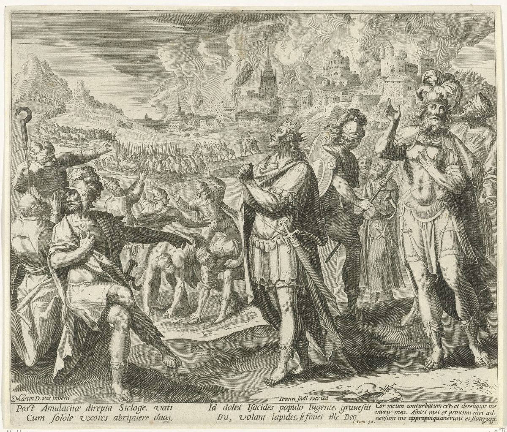

1 Samuel 30 — La Traducción Mister

1 Samuel 30:3–6. David y sus hombres han vuelto a casa y hallan Siclag quemada y a sus familias llevadas; los soldados lloran, el pueblo habla de apedrearlo, y «David se fortaleció en Jehová su Dios». La lámina de Sadeler, según un dibujo de Maerten de Vos, muestra a David orando ante el pueblo en llamas mientras sus hombres señalan y gritan. Los versos latinos bajo la imagen dicen que, cuando los amalecitas habían saqueado Siclag y se habían llevado a las dos mujeres con los niños, el hijo de Isaí se duele con el pueblo, crece la ira y las piedras están listas, y él se consuela en Dios. Las dos líneas de la esquina son del Salmo 37 en la numeración latina, que es el Salmo 38 en la hebrea.

Notas del traductor — versículo por versículo
Al tercer día. «Cuando David y sus hombres llegaron a Siclag al tercer día, los amalecitas habían hecho una incursión contra el Néguev y contra Siclag»: el verbo es pashat, hacer una incursión, el verbo de las incursiones del propio David contra «el guesureo y el guizrita y el amalecita» (27:8, ya en estas páginas) y de la incursión filistea contra Keila (23:27); el texto no la llama un golpe de vuelta. Siclag es el pueblo que le dio Aquis (27:6). La RV60 tiene «los de Amalec habían invadido el Neguev y a Siclag»; la TNM 1987 «hicieron una incursión en el sur y en Ziqlag»; la NVI «habían invadido la región del Néguev»; la Douay inglesa «had made an invasion on the south side».
Llevadas, y no muertas. «Y habían llevado cautivas a las mujeres que estaban en ella, desde el pequeño hasta el grande», y «las condujeron y se fueron por su camino»: los amalecitas toman cautivos y no matan a ninguno. Las incursiones de David fueron lo contrario, «no dejaba con vida ni hombre ni mujer» (27:9, 27:11), y a Saúl se le había mandado dar muerte a Amalec «desde el hombre hasta la mujer» (15:3, todos ya en estas páginas). El griego dice que no dieron muerte «ni a hombre ni a mujer». La RV60 tiene «sino se los habían llevado al seguir su camino»; la TNM 1987 «fueron conduciéndolos y siguieron su camino»; la NVI «habían tomado cautivos a las mujeres»; la Douay inglesa «they had not killed any person».
Llanto. «Y mira, estaba quemada con fuego; y sus mujeres y sus hijos y sus hijas habían sido llevados cautivos. Y David y el pueblo que estaba con él alzaron su voz y lloraron, hasta que no hubo en ellos fuerza para llorar»: el pueblo alzó su voz y lloró en Boquim (Jueces 2:4), en Betel (Jueces 21:2) y en Guibeá cuando llegaron los mensajeros de Jabes (11:4, todos ya en estas páginas). «Ninguna fuerza en ellos» está en un versículo de la Biblia hebrea, este. La RV60 tiene «hasta que les faltaron las fuerzas para llorar»; la NVI «hasta quedarse sin fuerzas»; la TNM 1987 «hasta que no hubo en ellos poder para llorar»; la Douay inglesa «till they had no more tears».
Ahinoam y Abigail. «Y las dos mujeres de David habían sido llevadas cautivas: Ahinoam la jezreelita, y Abigail la mujer de Nabal el carmelita»: las dos mujeres de 25:43 y 27:3 (ya en estas páginas), Ahinoam todavía nombrada por el Jezreel de Judá (Jezreel en Judá) y Abigail todavía por su primer marido. En 27:3 el carmelita es femenino, «la carmelita», y aquí es masculino, «Nabal el carmelita». La RV60 tiene «Ahinoam jezreelita y Abigail la que fue mujer de Nabal el de Carmel»; la NVI «Abigaíl, la viuda de Nabal de Carmel».
Amargados de alma. «Y David se angustió mucho, porque el pueblo hablaba de apedrearlo; pues el alma de todo el pueblo estaba amargada, cada uno por sus hijos y por sus hijas»: vatetsér, de tsar, estrecho, el verbo de verse acorralado. El pueblo son los hombres que «se juntaron con él», «todo hombre amargado de alma» (22:2, ya en estas páginas); la misma raíz, mar, es aquí maráh, y la amargura que los trajo a él se vuelve ahora contra él. «Apedrear» es saqal. La RV60 tiene «el pueblo hablaba de apedrearlo, pues todo el pueblo estaba en amargura de alma»; la TNM 1987 «el alma de toda la gente se había amargado»; la NVI «todos se sentían amargados»; la Douay inglesa «the soul of every man was bitterly grieved».
Se fortaleció. «Pero David se fortaleció en Jehová su Dios»: va-yitjazzéq, la forma reflexiva de jazaq. «David se fortaleció» está en un versículo de la Biblia hebrea. En Hores fue Jonatán quien «fortaleció su mano en Dios» (23:16, ya en estas páginas); aquí no hay Jonatán, y David lo hace por sí mismo. La RV60 tiene «mas David se fortaleció en Jehová su Dios»; la TNM 1987 «David recurrió a fortalecerse mediante Jehová su Dios»; la NVI «Pero cobró ánimo y puso su confianza en el Señor su Dios»; la Douay inglesa «took courage in the Lord his God».
El efod, y la respuesta. «Trae aquí el efod, por favor»: el pedido de 23:9 (ya en estas páginas), a Abiatar hijo de Ahimelec, el único hombre que escapó de Nob (22:20); el griego tiene solo «Trae el efod» y no la cláusula de que Abiatar lo trajo. «Y David preguntó a Jehová»: Saúl había preguntado a Jehová, «y Jehová no le respondió» (28:6, ya en estas páginas), y a David se le responde enseguida, «Persigue; porque de cierto alcanzarás, y de cierto rescatarás». «De cierto alcanzarás» está en un versículo de la Biblia hebrea. «Rescatar» es natsal, y es el verbo del versículo 18. La RV60 tiene «de cierto librarás a los cautivos»; la TNM 1987 «sin falta efectuarás una liberación»; la NVI «rescatarás a los cautivos». Para «tropa», guedud, la RV60 tiene «estos merodeadores»; la TNM 1987 «esta partida merodeadora»; la NVI «esa banda de saqueadores»; la Douay inglesa «these robbers». Sobre el efod, véanse las entradas anteriores.
El torrente de Besor. «Y David fue, él y los seiscientos hombres que estaban con él»: los seiscientos de 23:13 y 27:2 (ya en estas páginas). «Llegaron hasta el torrente de Besor»: nájal ha-Besór, que está en tres versículos de la Biblia hebrea, todos en este capítulo (versículos 9, 10 y 21). Suele tomarse por el uadi que desemboca en el mar cerca de Gaza (se informa, no se ha comprobado aquí); Besor tiene su propia entrada. La RV60 tiene «el torrente de Besor»; la TNM 1987 «el valle torrencial de Besor»; la NVI «al arroyo de Besor»; la Douay inglesa «the torrent Besor».
Demasiado cansados para cruzar. «Porque doscientos hombres se quedaron atrás, que estaban demasiado cansados para cruzar el torrente de Besor»: pigrú, que está en dos versículos de la Biblia hebrea, este y el versículo 21. Los seiscientos se dividen aquí como en 25:13 (ya en estas páginas), «unos cuatrocientos hombres», y «doscientos se quedaron con el equipaje». La RV60 tiene «que cansados no pudieron pasar el torrente de Besor»; la NVI «demasiado cansados para cruzar el arroyo»; la TNM 1987 «demasiado cansados para pasar el valle torrencial de Besor»; la Douay inglesa «who being weary could not go over the torrent Besor».
Higos y pasas. «Y hallaron a un hombre egipcio en el campo»: Amalec era el pueblo «desde Havila según se va a Shur, que está frente a Egipto» (15:7, ya en estas páginas). Le dan pan y agua, y «un pedazo de torta de higos y dos racimos de pasas»: la comida del regalo de Abigail a David, «cien racimos de pasas, y doscientas tortas de higos» (25:18, ya en estas páginas). La RV60 tiene «un pedazo de masa de higos secos y dos racimos de pasas»; la TNM 1987 «una tajada de una torta de higos comprimidos y dos tortas de pasas»; la NVI «una torta de higo y dos tortas de uvas pasas»; la Douay inglesa «a piece of a cake of figs, and two bunches of raisins».
Le volvió el espíritu. «Y comió, y su espíritu volvió a él; porque no había comido pan ni bebido agua por tres días y tres noches»: «su espíritu volvió» está en dos versículos de la Biblia hebrea, aquí y Sansón en En-hacoré (Jueces 15:19, ya en estas páginas). «Tres días y tres noches» también está en dos versículos, aquí y Jonás en el pez (Jonás 2:1 en la numeración hebrea, que es 1:17 en las Biblias castellanas). La RV60 tiene «volvió en él su espíritu»; la TNM 1987 «le volvió el espíritu»; la NVI «recobró las fuerzas»; la Douay inglesa «his spirit returned, and he was refreshed».
¿De quién eres? «¿De quién eres tú, y de dónde eres?»: la pregunta que se hace a un esclavo. «Soy un joven egipcio, esclavo de un hombre amalecita; y mi amo me dejó, porque hace tres días caí enfermo»: ha-yom shloshá, «hoy tres». La ruta de los incursores es el relato del egipcio: «el Néguev de los cereteos, y lo que pertenece a Judá, y el Néguev de Caleb». Los cereteos son un pueblo de la costa filistea (Sofonías 2:5), y el nombre vuelve para la guardia del propio reinado de David, «los cereteos y los peleteos» (2 Samuel 8:18, todavía no); el griego tiene «Colti». El Néguev de Caleb es la tierra de Nabal el calebita (25:3) y del pedido de Acsa, «me has dado tierra del Néguev» (Jueces 1:15, los dos ya en estas páginas). La RV60 tiene «¿De quién eres tú, y de dónde eres?»; la NVI «¿A quién perteneces?»; la TNM 1987 «esclavo de un amalequita»; la Douay inglesa «the south side of Cerethi».
Júrame por Dios. «Júrame por Dios que no me darás muerte, ni me entregarás en mano de mi amo»: tasguiréni, «me entregarás», el verbo de la ley «No entregarás a su amo al esclavo que se haya escapado a ti» (Deuteronomio 23:16, ya en estas páginas). La forma está en un versículo de la Biblia hebrea. Este esclavo fue dejado atrás, no huyó, así que la ley le sirve solo por su espíritu. Jura por Elohim, Dios, y no por el nombre. El hebreo no dice que David jurara; la Douay inglesa añade «And David swore to him». La RV60 tiene «Júrame por Dios que no me matarás, ni me entregarás en mano de mi amo»; la NVI «Júreme usted por Dios»; la TNM 1987 «que no me darás muerte, y que no me entregarás en mano de mi amo».
Festejando. «Estaban dispersos sobre toda la tierra, comiendo y bebiendo y festejando»: jogguím, de hagag, el verbo de la fiesta de peregrinación; la RV60 tiene «haciendo fiesta», la NVI «festejando», la TNM 1987 «teniendo un banquete», la Douay inglesa «keeping a festival day». «Por todo el gran botín que habían tomado de la tierra de los filisteos y de la tierra de Judá»: las dos tierras juntas están en un versículo de la Biblia hebrea. Los amalecitas han hecho incursiones en las dos, y mientras los filisteos marchan al norte (29:11, ya en estas páginas) su propio país es despojado.
Desde el crepúsculo. «Y los hirió David desde el crepúsculo hasta la tarde del día siguiente»: néshef es un crepúsculo, y cuál no está fijado. Proverbios 7:9 lo pone «en la tarde del día», y el Salmo 119:147, «Me adelanto al alba» (Salmo 119:147, ya en estas páginas), es el de antes de la mañana. La RV60 tiene «desde aquella mañana hasta la tarde del día siguiente»; la NVI «al amanecer»; la TNM 1987 «desde la oscuridad matutina hasta el atardecer», y añade «para darlos por entero a la destrucción», que es su lectura de la última palabra de la cláusula; la Douay inglesa «from the evening unto the evening of the next day». «No escapó de ellos ningún hombre, sino cuatrocientos jóvenes que montaron en camellos y huyeron»: cuatrocientos huyeron, como cuatrocientos perseguían.
Rescató. «Y David rescató todo lo que Amalec había tomado; y a sus dos mujeres las rescató David»: el verbo es natsal dos veces, el verbo de «de cierto rescatarás» en el versículo 8, y la RV60 lo parte en «libró» y «libertó»; la TNM 1987 conserva el único verbo, «librar … libró». «Y no les faltó nada, desde el pequeño hasta el grande»: lo contrario del versículo 2, donde las mujeres fueron llevadas «desde el pequeño hasta el grande». La RV60 tiene «Y no les faltó cosa alguna, chica ni grande»; la TNM 1987 «de lo más pequeño a lo más grande»; la NVI «ni grande ni pequeño».
El botín de David. «Y David tomó todas las ovejas y las vacas; las llevaron delante de aquel otro ganado, y dijeron: “Este es el botín de David”»: el ganado de los propios amalecitas, llevado delante de lo que se devolvió. El hebreo no dice quién habla. La RV60 tiene «trayéndolo todo delante, decían: Este es el botín de David»; la NVI «pregonaba: “¡Este es el botín de David!”»; la TNM 1987 «los cuales condujeron delante de aquel [otro] ganado»; la Douay inglesa «This is the prey of David».
Preguntó por su bienestar. «Y David se acercó al pueblo, y preguntó por su bienestar»: shaál le-shalóm, como los hombres de Saúl habían de preguntar por el suyo (10:4) y David preguntó a sus hermanos «cómo estaban» (17:22, los dos ya en estas páginas). La RV60 tiene «les saludó con paz»; la TNM 1987 «empezó a preguntar»; la NVI «se acercó para saludarlos»; la Douay inglesa «saluted them peaceably».
Hombres de la nada. «Y respondió todo hombre malo y de la nada, de los hombres que habían ido con David»: ish ra u-veliyyáal, una frase que está en un versículo de la Biblia hebrea. La nada, beliyaal, es la de los hijos de Elí (2:12) y la de Nabal (25:17, los dos ya en estas páginas). «Porque no fueron conmigo, no les daremos nada del botín que rescatamos»: cada uno habla por sí mismo, «conmigo», y usan el verbo del rescate de David para el suyo. La RV60 tiene «todos los malos y perversos»; la TNM 1987 «todo hombre malo y que no servía para nada»; la NVI «gente mala y perversa»; la Douay inglesa «the wicked and unjust men».
La parte del equipaje. «No harán así, hermanos míos, con lo que Jehová nos ha dado; él nos ha guardado, y ha entregado en nuestra mano a la tropa que vino contra nosotros»: el mérito a Jehová, que los «guardó». «Porque como la parte del que baja a la batalla, así será la parte del que se queda junto al equipaje; juntos repartirán»: «juntos repartirán» está en un versículo de la Biblia hebrea. El equipaje, kelim, es donde Saúl se escondió por su elección (10:22) y donde David dejó el suyo antes de correr a la línea de batalla (17:22), y donde se quedaron doscientos en 25:13 (todos ya en estas páginas). La ley del botín había dividido la presa entre «los que empuñaron la guerra» y «toda la congregación» (Números 31:27), y Josué mandó a las tribus de Transjordania a casa a «repartir el botín de sus enemigos con sus hermanos» (Josué 22:8, los dos ya en estas páginas). El griego añade en el versículo 24, «porque no son menos que ustedes». La RV60 tiene «la parte del que queda con el bagaje; les tocará parte igual»; la TNM 1987 «al que se quedó junto al bagaje. Todos participarán juntos»; la NVI «Del botín participan tanto los que se quedan cuidando el bagaje como los que van a la batalla»; la Douay inglesa «him that abode at the baggage».
Estatuto y ordenanza. «Y fue así desde aquel día en adelante; y lo estableció como estatuto y ordenanza para Israel, hasta el día de hoy»: le-jóq u-le-mishpát. El par está en cuatro versículos de la Biblia hebrea: en el agua amarga de Mara (Éxodo 15:25), en Siquem (Josué 24:25, los dos ya en estas páginas), aquí, y el corazón de Esdras (Esdras 7:10, todavía no). La RV60 tiene «por ley y ordenanza en Israel»; la TNM 1987 «disposición reglamentaria y decisión judicial»; la NVI «estatuto como ley en Israel»; la Douay inglesa «a statute, and an ordinance, and as a law».
Una bendición para sus prójimos. «Y envió del botín a los ancianos de Judá, sus prójimos, diciendo: “Miren, una bendición para ustedes del botín de los enemigos de Jehová”»: berajá, bendición, la palabra del regalo de Abigail (25:27, ya en estas páginas), y le-reehú es de reá, prójimo o amigo, la palabra del «prójimo tuyo, mejor que tú» que había de tener el reino de Saúl (15:28, ya en estas páginas). «Los enemigos de Jehová» son los amalecitas; «las batallas de Jehová» fueron la frase de Abigail para la lucha de David (25:28, ya en estas páginas). La RV60 tiene «un presente para vosotros del botín de los enemigos de Jehová» y «sus amigos»; la TNM 1987 «un regalo de bendición»; la NVI «un regalo del botín»; la Douay inglesa «Receive a blessing of the prey».
La lista. Siguen trece entradas, once pueblos y las ciudades del jerameelita y del ceneo, todos en el sur de Judá. Jatir y Estemoa están en la serranía de Judá (Josué 15:48, 15:50) y son ciudades levíticas (21:14); Horma es el pueblo de la vieja derrota y victoria (Números 14:45, Jueces 1:17); Hebrón es la futura capital (Hebrón) (todos ya en estas páginas). Este Bet-el no es el Betel del norte; probablemente es el Betul del sur, «Eltolad, y Betul, y Horma» (Josué 19:4, ya en estas páginas), que el cronista llama Betuel (1 Crónicas 4:30, todavía no). Este Aroer no es el Aroer del Arnón. Sifmot está en un versículo de la Biblia hebrea, y Bor-asán también; la RV60 tiene «Corasán», que sigue otra lectura de la palabra, y el griego tiene «Beerseba» en su lugar. Racal y Atac no se conocen en otra parte (se informa, no se ha comprobado aquí). El griego nombra de otro modo varios de los lugares, entre ellos Bet-sur por Bet-el y Carmelo por Racal. El jerameelita y el ceneo son los pueblos que David había dicho a Aquis que estaba atacando, «el Néguev del jerameelita … el Néguev del ceneo» (27:10, ya en estas páginas); les envía regalos. La RV60 tiene «Bet-el», «Ramot del Neguev», «Jatir», «Aroer», «Sifmot», «Estemoa», «Racal», «Horma», «Corasán» y «Atac»; la NVI «Betel, Ramot del Néguev, Jatir»; la TNM 1987 «Betel», «Ramot del sur» y «Borasán»; la Douay inglesa «the lake Asan».
Donde David anduvo. «Y a todos los lugares donde David anduvo, él y sus hombres»: hitjalléj, el verbo de «anduvieron por donde anduvieron» en Keila (23:13, ya en estas páginas; véase hitalej). El vagar de los años de fugitivo se paga con regalos. La RV60 tiene «en todos los lugares donde David había estado con sus hombres»; la TNM 1987 «por donde David había andado, él y sus hombres»; la NVI «donde David y sus hombres habían vivido»; la Douay inglesa «in which David had abode with his men».
Patrones que vale la pena llevar adelante
Donde esta traducción mantiene las palabras exactas y distintas: «incursión» para pashat, como en 27:8; «el Néguev»; «desde el pequeño hasta el grande» en los versículos 2 y 19 por igual; «dar muerte»; «alzaron su voz y lloraron», como en 11:4; «amargado», como en 22:2; «apedrear» para saqal; «se fortaleció», como en 23:16; «Trae aquí el efod», como en 23:9; «preguntó a Jehová»; «rescatar» para natsal en los versículos 8 y 18 por igual, y «rescatamos» en el versículo 22; «la tropa» para guedud; «el torrente de Besor»; «demasiado cansados» para pigrú; «torta de higos» y «racimos de pasas», como en 25:18; «su espíritu volvió», como en Jueces 15:19; «entregar» para tasguir, como en Deuteronomio 23:16; «preguntó por su bienestar», como en 10:4; «de la nada» para beliyyáal, como en 2:12 y 25:17; «equipaje» para kelim, como en 10:22 y 17:22; «estatuto y ordenanza», como en Éxodo 15:25; «bendición» para berajá, como en 25:27; «prójimos» para reá, como en 15:28; y «anduvo» para hitjalléj, como en 23:13.
Ecos pagados. Las incursiones de David contra el amalecita y los otros pueblos, y su práctica de no dejar a nadie con vida (27:8–11); la orden de Saúl de dar muerte a Amalec (15:3); el llanto en Boquim, Betel y Guibeá (Jueces 2:4; 21:2; 1 Samuel 11:4); las dos mujeres (25:43; 27:3); los seiscientos y la división de cuatrocientos y doscientos (23:13; 25:13; 27:2); todo hombre amargado de alma (22:2); Jonatán en Hores (23:16); el efod y Abiatar (22:20; 23:9); Saúl sin respuesta (28:6); los higos y las pasas y la bendición y las batallas de Jehová de Abigail (25:18, 27, 28); el Amalec de Havila y Shur (15:7); el espíritu que vuelve de Sansón (Jueces 15:19); Nabal el calebita y el Néguev de Acsa (25:3; Jueces 1:15); la ley del esclavo escapado (Deuteronomio 23:16); la pregunta por el bienestar (10:4; 17:22); los hijos de la nada (2:12; 25:17); el equipaje (10:22; 17:22; 25:13); las leyes del botín de Números 31:27 y Josué 22:8; el estatuto y ordenanza de Mara y de Siquem (Éxodo 15:25; Josué 24:25); el prójimo de 15:28; los pueblos de Josué 15, 19 y 21 y los dos relatos de Horma (Números 14:45; Jueces 1:17); el jerameelita y el ceneo de 27:10; y el andar de David (23:13).
Ecos sembrados. Los cereteos y los peleteos en el reinado de David (2 Samuel 8:18) y la nación de los cereteos (Sofonías 2:5); «tres días y tres noches» en Jonás (2:1); el crepúsculo de la tarde de Proverbios 7:9; el estatuto y ordenanza en Esdras 7:10; Betuel y Horma y Siclag en 1 Crónicas 4:30; la batalla filistea en Gilboa y la muerte de Saúl y sus hijos (31:1–6, ya en estas páginas), de la que David se entera después de haberse quedado «dos días en Siclag» (2 Samuel 1:1); y los ancianos de Judá que ungen a David en Hebrón (2 Samuel 2:1–4). Ninguno de los demás está todavía en estas páginas, salvo 2 Samuel 1:1, que ya lo está.
Próxima entrega de este libro: 1 Samuel 31 — Gilboa: los filisteos pelean contra Israel y los hombres de Israel huyen; los hijos de Saúl, Jonatán entre ellos, mueren; Saúl, herido por los flecheros, pide a su escudero que lo traspase, y cae sobre su propia espada; los filisteos clavan los cuerpos en el muro de Bet-seán, hasta que los hombres de Jabes de Galaad vienen de noche.